在 cPanel 上安装 WordPress
cPanel 是我们经常使用的一款虚拟主机面板，功能强大。如果购买了一些国外的主机商的虚拟主机，一般提供的都是 cPanel 。
在 cPanel 上快速安装 WordPress
有的主机的 cPanel 集成了 Softaculous 的安装工具，这样我们可以通过简单的配置来安装 WordPress。
可以登录你的 cPanel， 在其中寻找 Softaculous App Installer。
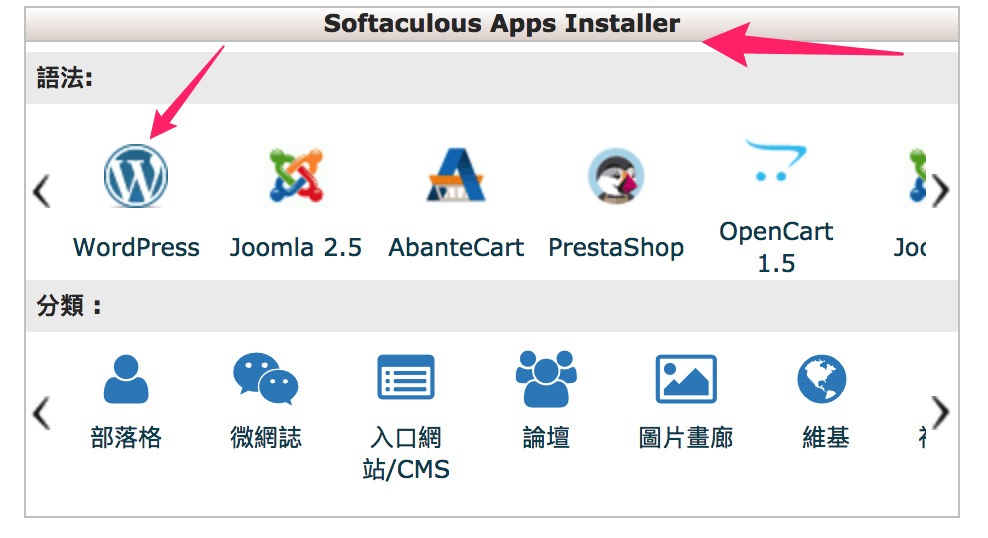
单击其中的 WordPress 会进入到安装界面。
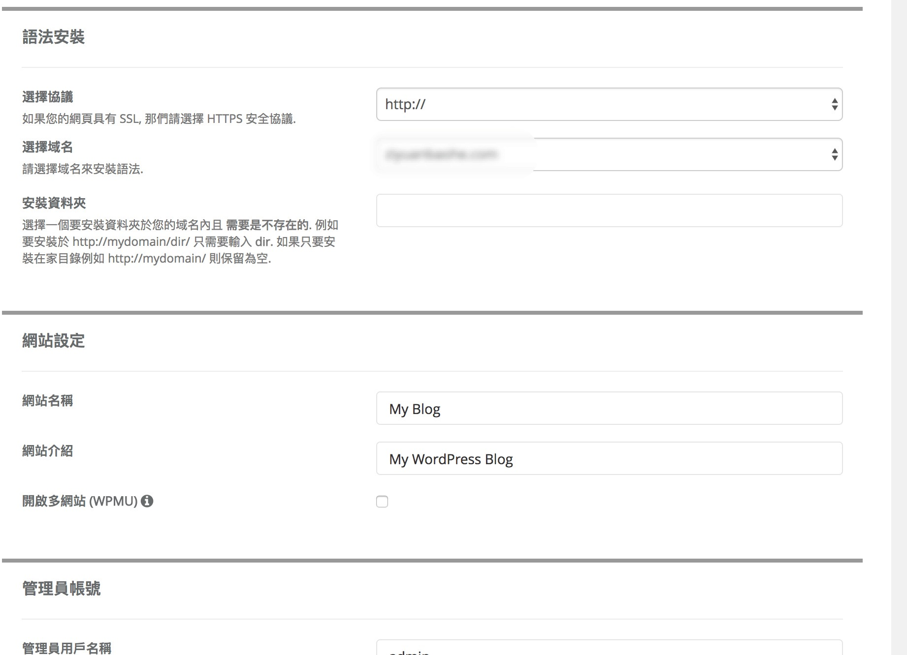
填写其中的安装信息，点击最下方的安装：
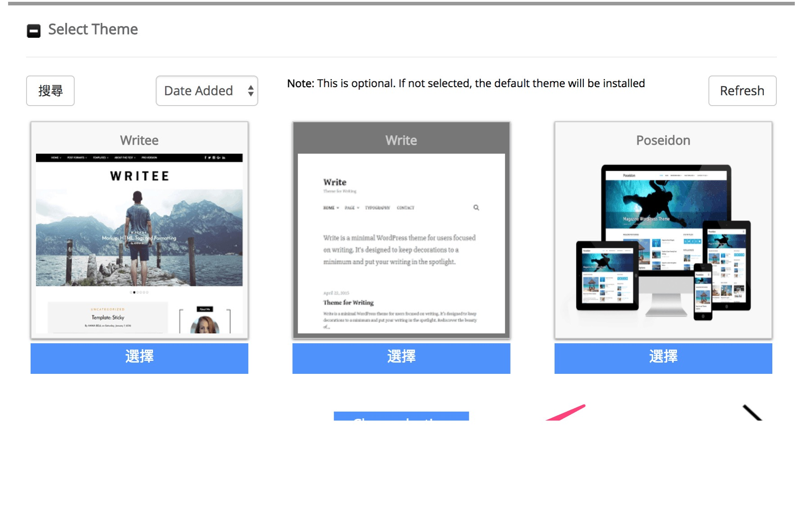
稍等片刻，就安装成功了。
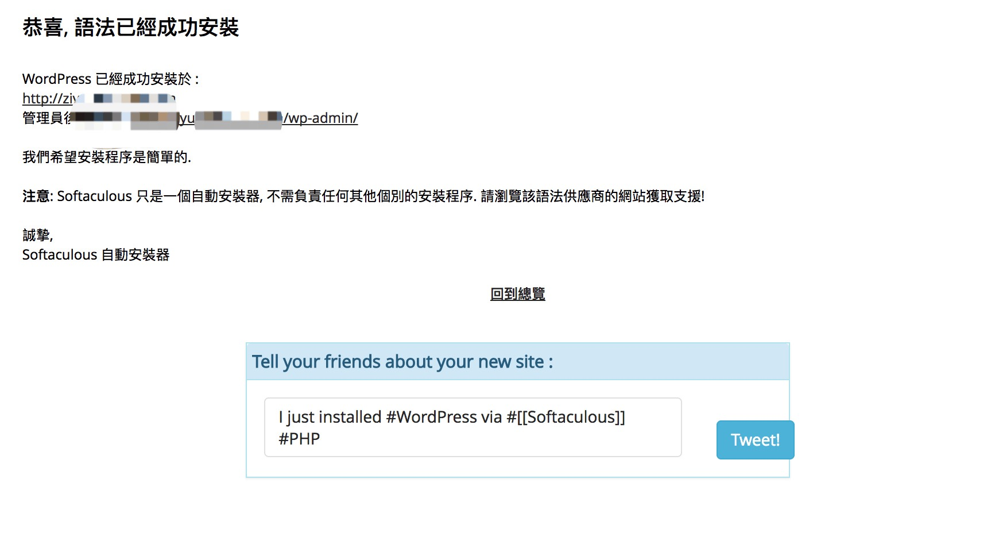
可以单击上面的管理员后台的链接，登录 WordPress 后台。
在 cPanel 中使用常规方法安装 WordPress
虽然快捷安装方便，但并不是每个主机商都会集成，所以我们再补充一个常规的安装方法。
下载 WordPress 安装包
访问 http://wordpress.org/latest.zip 即可下载到最新的 WordPress 安装包。
上传 WordPress 的安装包
打开 cPanel ，找到文件管理器：
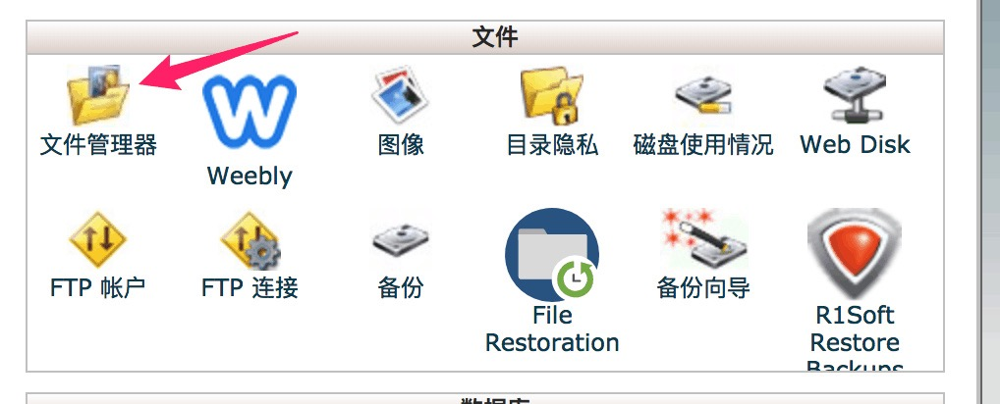
在文件管理器中找到 public_html 目录，单击进入该目录。
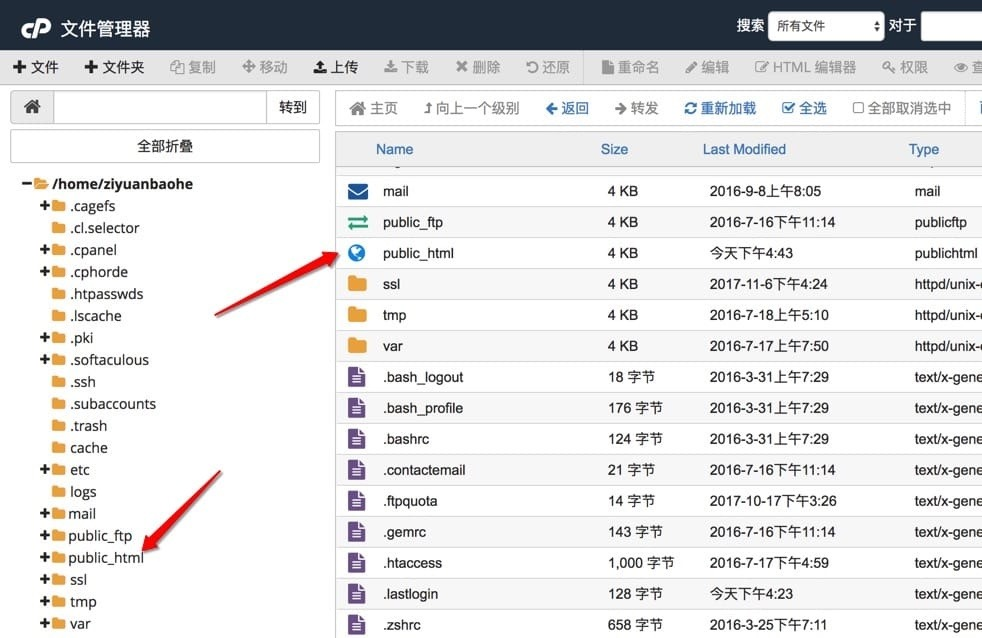
进入该目录后，单击“上传”按钮：
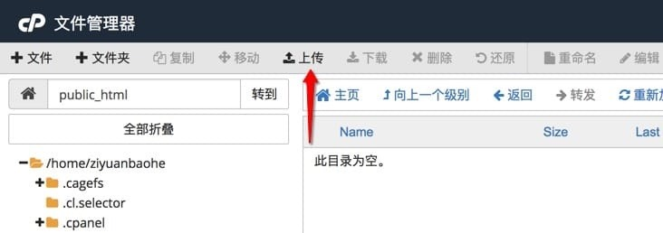
在新的页面中选择我们刚刚下载的 latest.zip 文件，进行上传。
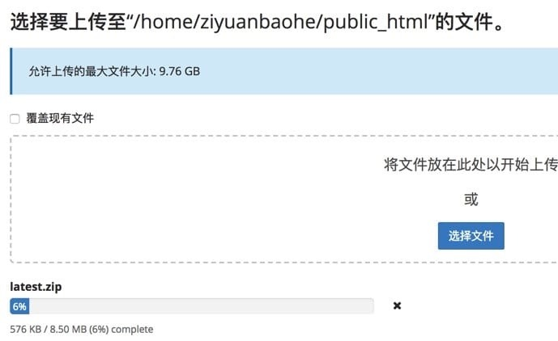
等待其上传成功后，就关掉这个页面。
删除成功后，会变成绿色的进度条。
回到文件管理器页面，单击“重新加载”按钮，就可以看到刚刚上传的文件了。
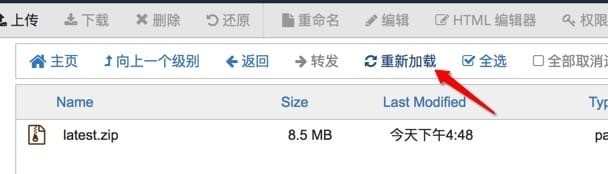
选中它，单击上方的“提取”按钮：
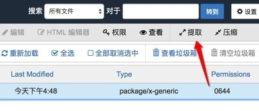
并在弹出的窗口中选择Extract File，稍等片刻，就解压成功了。
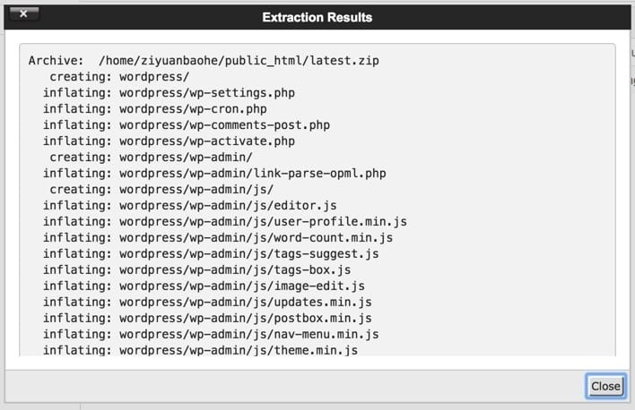
单击解压出来的 wordpress 文件夹，进入该文件夹。
勾选菜单栏中的“全选”复选框，再单击上方的“移动”按钮。
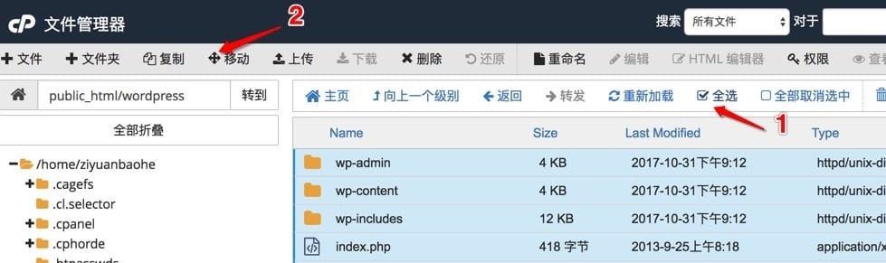
在弹出窗口中，将移动路径改为 /public_html，并单击Move File按钮。
这样我们就完成了 WordPress 文件上传了。
创建数据库
接下来回到 cPanel 管理界面，找到其中的 MySQL 数据库向导。点击进入向导。
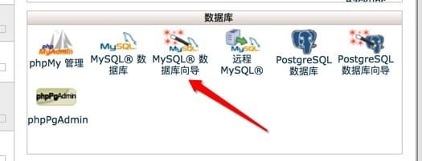
分别输入数据库名、用户名和密码：
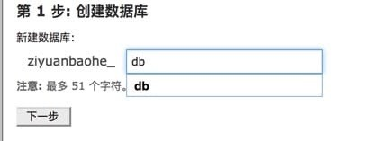
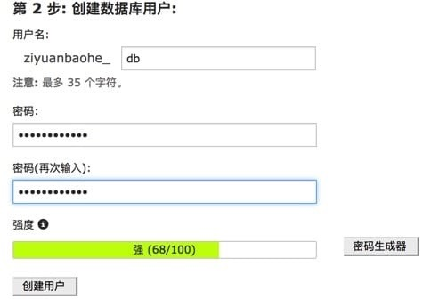
在选择权限时，勾选“所有权限”复选框：
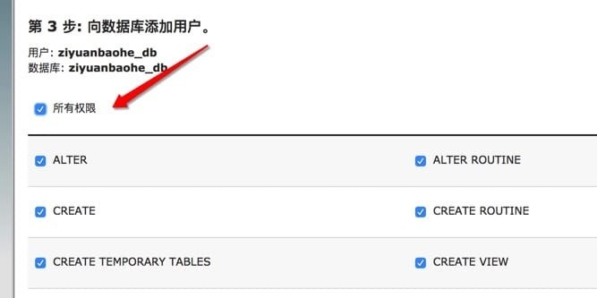
然后单击“下一步”按钮，就可以看到添加成功的界面。
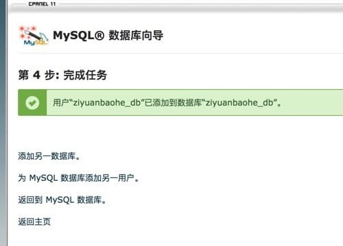
稍后安装 WordPress 时，就可以使用刚刚创建的数据库去安装 WordPress 了。
安装 WordPress
接下来，就可以访问你的虚拟主机绑定的域名去安装 WordPress 了。具体的安装部分，可以参考上方的 Mac 开发环境配置部分的相关内容。